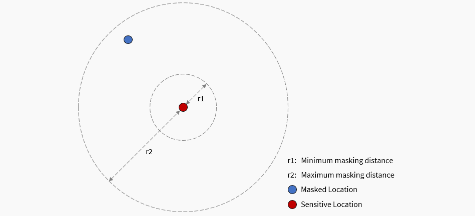
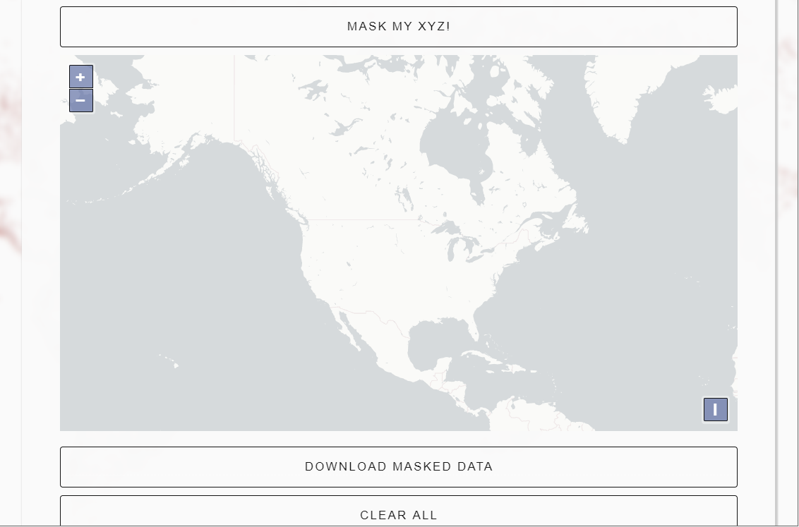

MaskMy.XYZ is a tool that simplifies the process of geographic masking. Everything runs client-side in your browser, meaning there's nothing to install, data never leaves your computer, and as a result nobody except you ever sees your confidential files. It is a safe and secure way to anonymize spatial data without getting your hands dirty in GIS.
What is MaskMy.XYZ?
MaskMy.XYZ helps users perform a time-tested geographic mask from the scientific literature, known as donut masking. Instead of being a toolbox for a specific (potentially expensive) GIS software suite, MaskMy.XYZ uses popular open source JavaScript libraries to mask data without ever requiring users to install or download any software. So whether you're a GIS expert who can't be bothered to script this method yourself, or a GIS newbie who knows you need to mask your data but aren't quite sure how, MaskMy.XYZ makes your life easier and brings previously cumbersome methods into reach.
Should I trust this site with my data?
When you load your files, no data leaves your browser, and all processing is done client-side using JavaScript. In fact, the application has been specifically designed so that it can be run offline for the utmost confidentiality. That means you don't need to trust this site: you can just load the page, unplug your internet, and do your work with the guarantee that your data isn't being stolen.
What about the basemap?
When MaskMy.XYZ is used while connected to the internet, it will load a basemap to help visualize your data. This does not put your data at risk in any realistic scenario. The basemap loads areas that are several kilometers in size, and does not send the points themselves to the basemap provider. If you are still concerned you can always run the tool offline!
Is it foolproof?
No, and neither is any other privacy-related tool. MaskMy.XYZ drastically simplifies the process of geographic masking while also providing general advice, but that doesn't guarantee that your data can't be re-identified. It is up to you to ensure that you're using this tool appropriately and that you understand its limitations! For more information, check out the disclaimer.
Credits
MaskMy.XYZ uses and is grateful for a number of open source software projects, including HTML5Up, TurfJS, Shapefile-JS, Shp-Write, JQuery, FileSaver.js, JSZip, Proj4JS, and OpenLayers. Their respective licenses can be found here
What is geographic masking?
Researchers often like publishing maps, but doing so can be dangerous when the data being mapped is sensitive or private. Home addresses of patients, the position of archeological sites, and the location of endangered species are just three examples among many where a map can be hugely helpful for readers, but may also expose people's sensitive health data, attract unwanted tourists to archeological sites, or direct hunters towards those already-endangered animals.
Geographic masks are a set of techniques that alter the location of points in a map to protect privacy without overly affecting any spatial patterns. In other words, geographic masks allow researchers to publish useful maps of approximate locations, without exposing sensitive data or violating anyone's privacy. Of course, this is a trade-off: with more masking comes more privacy, but this privacy comes as the cost of information loss. If we apply too much masking to our data, the end result may not resemble the original data whatsoever. While the balance between privacy and information loss can be tricky, its best to air on the side of privacy.
What geographic mask does MaskMy.XYZ use?
MaskMy.XYZ performs donut masking, which is a funny term for a simple concept: moving each point randomly between a minimum and maximum distance, as pictured below. Typically donut masking is performed by creating two buffers (circles), and then randomly generating a new point between those two buffers. MaskMy.XYZ does it a little differently: it chooses a random distance between the minimum and maximum values that you set, and then finds a random angle between 0 and 360 degrees, before finally relocating the point based on the combintion of the two. The end result is essentially the same, but is much easier for a computer to calculate!

Can I use this to mask trajectory data, like GPS tracks?
Technically yes, but there are a lot of caveats, and if you have to ask then you probably shouldn't! Trajectory data can often be very hard to effectively anonymize, especially if you want readers or users of your data to be able to distinguish between each trajectory (i.e. see who went where). If you're only publishing a static map of all the points in your dataset, and provide no indication that any given point belongs to a particular person, then it may be safe to use MaskMy.XYZ in this scenario, but be cautious. For more information, give this paper a read.
How do I use the masking tool?
Watch this GIF to learn how to mask your data, from start to finish!

How do I load data?
First, make sure the data you want to mask is in a shapefile format. Then, select all the individual files that form your shapefile (such as the .shp, .dbf, .prj, etc), and add them to a zip file. MaskMy.XYZ can only load zipped shapefiles. Once you have the zip file, just click the 'Choose File' button in the Masking Tool and select the zipped shapefile from your file system, as shown in the above video.
What are 'boundary polygons' for?
Sometimes when we mask data, we want to make sure that when each point moves it doesn't move out of a particular area. For instance, when masking a home location, we might want to ensure that when the point is masked (i.e. when it is relocated), that it doesn't leave the census tract it is in, so that the masked location keeps the same census variables as the original location. To do this in MaskMy.XYZ, just load the boundary polygons that you want to keep the points inside of, and MaskMy.XYZ will do the rest!
What masking distances should I use?
That depends on a wide variety of factors, including population density, the sensitivity of the data being masked, and the 'information loss' that you're comfortable with. In other words, it's entirely up to you and your knowledge of the data, but here are some guiding considerations:
Population Density: the underlying population density strongly effects how much masking is required to adequately protect privacy. For instance, masking a point in an urban core by 200 meters may provide a very strong degree of privacy if a thousand people live within those 200 meters, but moving a point in a rural town may not provide any privacy at all if nobody else lives within 200 meters. Often data-sets will span a combination of urban and rural areas, complicating things even further. Some geographic masks automatically take population density into account, however, for various reasons MaskMy.XYZ does not. Therefore, in deciding what distance to use when masking, it is critical that you reflect carefully on the underlying population density of your data.
Data Sensitivity: not all sensitive data is equally sensitive. For example, a database containing the home locations of patients suffering from the flu is far less sensitive than if the patients suffered from HIV. Obviously, far greater masking distances should be used in the latter scenario. While it is not always so clear-cut, decisions on an appropriate masking distance should take into account the sensitivity of the data being masked. Ask yourself, what are the stakes if someone reverse engineers the mask and re-identifies the people (or places) in your dataset?
Information Loss: increasing the distance used when masking data will provide more privacy, but it comes at the cost of information loss. In other words, the more we mask data, the less the masked data will resemble the original data. This can be critical if, for instance, you are trying to show clusters of a given disease but mask the data too much, making those clusters no longer detectable to readers. Ideally, a balance can be struck where a sufficient level of privacy is achieved with only a small amount of information loss. In cases where the level of privacy required necessarily produces too much information loss for the map to be useful, you may need to reconsider whether you should include a map at all!
What is the privacy rating?
The privacy rating is a rough measure of the likelihood that your data might be re-identified by someone. It is based on Spruill's measure, but we invert it to make it a privacy rating rather than a disclosure risk rating. Formally, Spruill's measure is defined by Armstrong et al (1999) as follows:
"For each record in the masked file M, compute the distance between its geographic co-ordinates and those of each record in the original file X. Spruill's measure, S, is the proportion of records in M that are closer to their 'parent' records than to any other record in X. A mask for which a large number of records are closest to their parent records has a high disclosure risk"
What is the mean center displacement distance?
This refers to how far the 'mean center' of your masked points have moved due to masking. 'Mean center' is essentially just the central point in a group of points. For instance, if you had a cluster of ten points, you might calculate the average X coordinate of all the points, and the average Y coordinate of all the points. These two averages represent the mean center. Like the privacy rating, it too is a crude measure, but essentially the more the mean center has moved, the more information loss your data has suffered.
What are cluster metrics?
Cluster metrics use an algorithm known as DBSCAN to try and find different pockets of points, or clusters, in your sensitive and masked data. Ideally, no clusters are added due to masking, nor are any lost. With cluster metrics enabled, you will be provided both a count of how many clusters there are before and after masking, as well as a visual representation of where those clusters are on the map, as points that are part of a cluster appear as bold on the map. However, DBSCAN is both complicated and very sensitive to the maximum cluster distance value you select, so don't use this to try and detect real, meaningful clusters in your data. Instead, play around with the value, see how it affects cluster detection until you find a value that you think looks reasonable, and use it for exploring how masking changes the distribution of your data and some of the potential clusters within it. This really is an exploratory tool, and is not meant for statistical purposes.
Should I publish my masking distances?
Nope! It's best not to disclose what masking distances you chose, as it could weaken the mask and make it easier for an adversary to re-identify the points.
When I download data, it goes to 'about:blocked'
This is a known issue with Chrome-based browsers and usually happens with larger data sets. If you're running into this problem, try using Firefox.
Other resources
Unfortunately, most of the resources required to learn about geographic masking are in the academic literature. For an excellent review article, read:
Zandbergen, P. (2014). Ensuring Confidentiality of Geocoded Health Data: Assessing Geographic Masking Strategies for Individual-Level Data. Advances in Medicine. https://doi.org/10.1155/2014/567049
A more comprehensive reading list can be found here. Included in that list are several more powerful masks than MaskMy.XYZ provides.
Load the data you want to mask: Load your sensitive data here as a zipped shapefile. For more info on how to load data, including an instructional video, check out the masking guide.
(Optional) Load boundary polygons to contain points: Optional, but if loaded, boundary files allow you to keep masked points within a given area, such as a census unit. For more info, check out the masking guide. Must be loaded as a zipped shapefile.
Distance: set the minimum and maximum distance in meters that any given point will move: Masking distances must be chosen carefully. For guidance on selecting a distance, check out the masking guide
Minimum Distance: 30meters
Maximum Distance: 300meters
Provides additional tools to see how much the masking process changed the data, which may help when judging what masking distance to use. Uses DBSCAN to identify points that form clusters, and notes the number of clusters identified before and after masking (ideally these values are the same). Meant for exploratory purposes only.
Maximum Cluster Distance: metersThis value adjusts the distance used by the DBSCAN algorithm to detect clusters. DBSCAN is both complicated and very sensitive to this distance value, so don't use this to try and detect real, meaningful clusters in your data. Instead, play around with the value, see how it affects cluster detection until you find a value that you think looks reasonable, and use it for exploring how masking changes the distribution of your data and some of the potential clusters within it.
Number of Clusters DetectedPoints that form clusters are represented in bold on the map. Ideally the number and location of clusters before and after masking are similar. Before Masking: After Masking: Clusters Lost or Added:
Privacy Rating: This represents the percentage of masked points that are closer to any sensitive point other than their original/parent/unmasked point. While this is a crude measure of privacy, higher ratings suggest a lower level of disclosure risk. A rating of 100 does not guarantee perfect privacy. Based on Spruill's Measure and inverted for clarity, as described here.
Center Displacement Distance: This represents how far the center of the point pattern moved due to masking. If you're unsure what a 'mean center' is, click here for a good explanation from ESRI.
Important Information:
MaskMy.XYZ isn't a silver bullet for privacy protection. It makes donut geomasking easy, but you still need to use appropriate masking distances for your dataset. Even 5km masking distances aren't enough if there's no one else living within 5km of a given point.
Remember that MaskMy.XYZ preserves all attribute data from your original shapefile. Since attribute data often also contains sensitive information, make sure to delete or anonymize that as well before you share your data.
Never reveal your masking distances to anyone, as this can weaken the effectiveness of the mask. Instead, simply state in your publication that the data was masked. Here's a standard line of text you can feel free to copy or modify and include in your publication:
"Sensitive spatial data was geographically masked using MaskMy.XYZ prior to publication to protect privacy, and therefore point locations on the map do not represent actual locations. Specific masking parameters have also been withheld to protect the integrity of the mask."
Find MaskMy.XYZ useful?
Help spread the word by citing it in your research or sharing it on social media. Just remember to keep your actual masking distances a secret!
APA: Swanlund, D., Schuurman, N., & Brussoni, M. (2019). MaskMy.XYZ: An Easy-To-Use Tool for Protecting Geoprivacy Using Geographic Masks. Transactions in GIS. https://doi.org/10.1111/tgis.12606
Chicago (Full Note):Swanlund, David, Nadine Schuurman, and Mariana Brussoni. "MaskMy.XYZ: An Easy-To-Use Tool for Protecting Geoprivacy Using Geographic Masks." Transactions in GIS, 2019. https://doi.org/10.1111/tgis.12606.
MLA: Swanlund, David, et al. "MaskMy.XYZ: An Easy-To-Use Tool for Protecting Geoprivacy Using Geographic Masks." Transactions in GIS, 2019, doi:10.1111/tgis.12606.
Disclaimer
MaskMy.XYZ is a tool that 1) offers general advice about geographic masking, and 2) makes certain geographic masks easier to use, but it is not a silver bullet for privacy protection or data anonymization. Geographic masking requires careful consideration and intimate knowledge of the data that is being masked to be effective. For instance, displacing a location in a densely populated city by 200 meters may provide very strong privacy protection, but in a rural environment it may provide little to no privacy at all. In other words, following the advice provided by MaskMy.XYZ and using its masking tools to anonymize your spatial data does not guarantee that your data is adeqautely protected. There are simply too many factors involved in privacy protection for any geographic masking method, tool, or service to provide any such guarantee. Frankly, to do so would be dishonest. Therefore, MaskMy.XYZ is provided 'as is', without warranty of any kind, expressed or implied. The project uses an MIT license, which is described below.
MIT License
Copyright (c) 2019, David Swanlund
Permission is hereby granted, free of charge, to any person obtaining a copy of this software and associated documentation files (the "Software"), to deal in the Software without restriction, including without limitation the rights to use, copy, modify, merge, publish, distribute, sublicense, and/or sell copies of the Software, and to permit persons to whom the Software is furnished to do so, subject to the following conditions:
The above copyright notice and this permission notice shall be included in all copies or substantial portions of the Software.
THE SOFTWARE IS PROVIDED "AS IS", WITHOUT WARRANTY OF ANY KIND, EXPRESS OR IMPLIED, INCLUDING BUT NOT LIMITED TO THE WARRANTIES OF MERCHANTABILITY, FITNESS FOR A PARTICULAR PURPOSE AND NONINFRINGEMENT. IN NO EVENT SHALL THE AUTHORS OR COPYRIGHT HOLDERS BE LIABLE FOR ANY CLAIM, DAMAGES OR OTHER LIABILITY, WHETHER IN AN ACTION OF CONTRACT, TORT OR OTHERWISE, ARISING FROM, OUT OF OR IN CONNECTION WITH THE SOFTWARE OR THE USE OR OTHER DEALINGS IN THE SOFTWARE.
Privacy Policy
MaskMy.XYZ uses Matomo Analytics to track usage. Matomo is an open-source, privacy focused analytics system that anonymizes user data. This data is stored in Canada, never sold, and is only used to see how much the tool is being used. More information on what data Matomo can collect can be found [here](https://matomo.org/faq/general/faq_18254/). Note that the site is hosted on Github pages, which has its own [privacy policy](https://docs.github.com/en/github/site-policy/github-privacy-statement).
This policy was last updated in November 2021, and may change at any time.